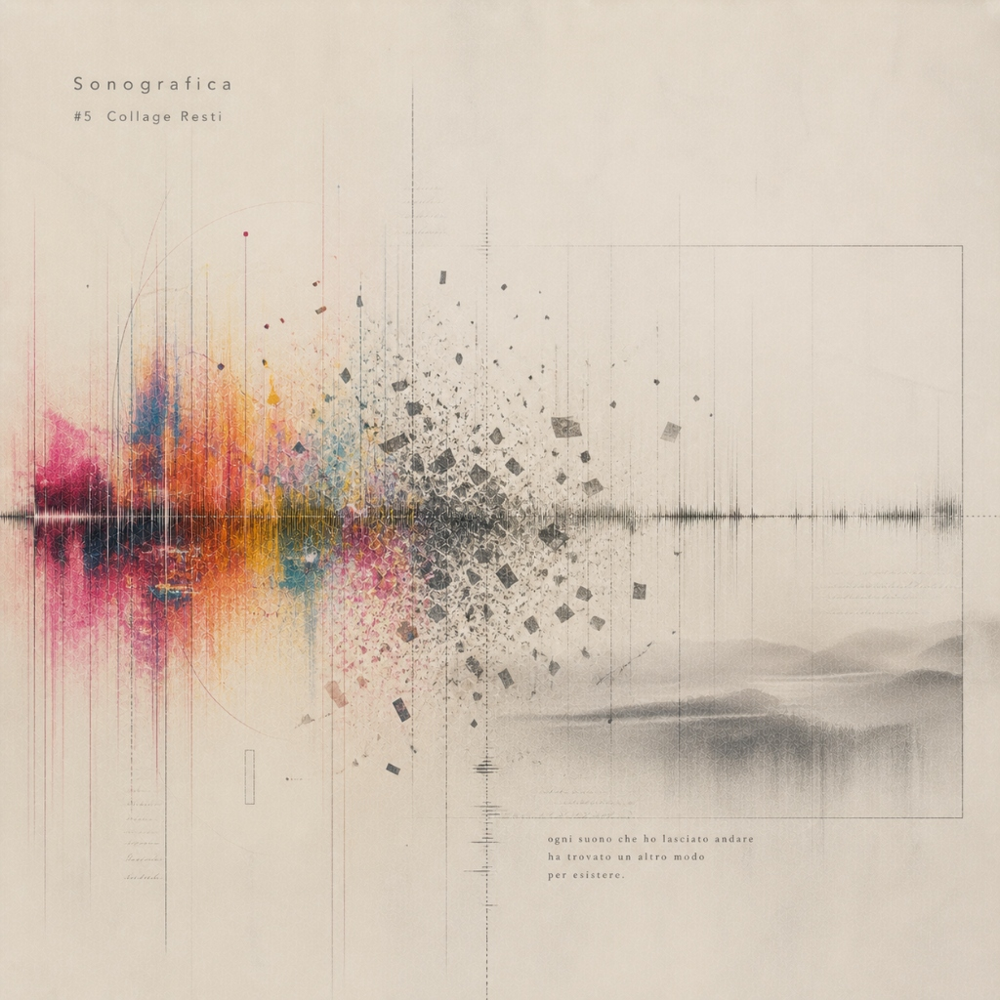

Statement
Sono (音) +
Sono (音) +
Grafica (描く・配置する)
音を描き、配置し、試行錯誤する。
完璧に整えられた美しさよりも、衝動や好奇心のままに音を置く実験を優先すること。
誰かのための完成品を作るのではなく、
自らのライフワークとして、気まぐれに、けれど淡々と。
Sonografica（ソノグラフィカ）は、Bito による、音と感情の断片をキャンバスに配置し続けるプライベート・オーディオ・レーベル／プロジェクトです。